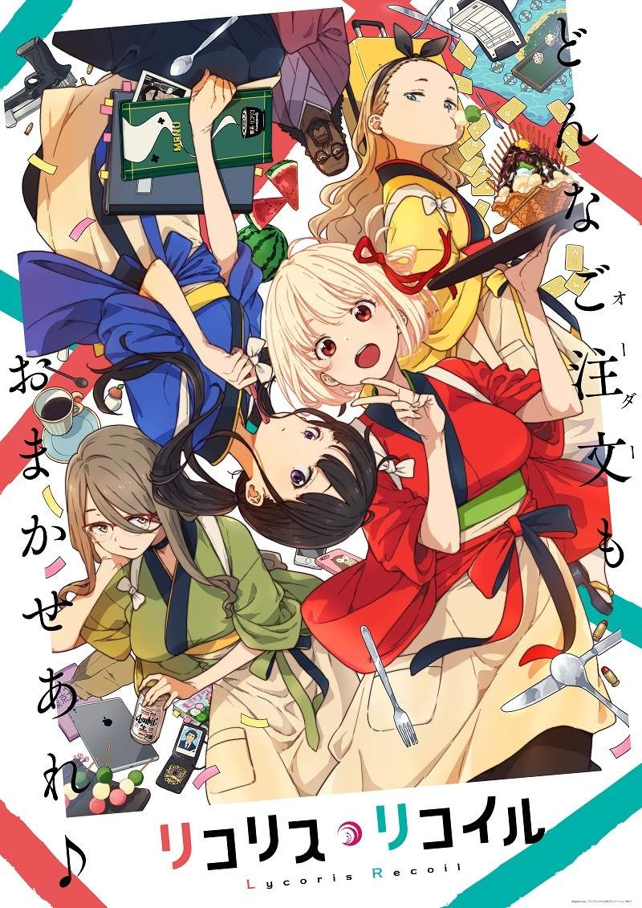

リコリス・リコイル

Lycoris Recoil 莉可麗絲，原創動畫。由A-1picture所作。平穩的日子──其底下隱藏著祕密。 將犯罪防範於未然的祕密組織──「DA（Direct Attack）」， 與旗下的少女特務們──「Lycoris」。 人們能過著理所當然的日常生活都是多虧了她們。 被譽為歷代最強Lycoris的菁英──錦木千束， 以及資質優秀但另有隱情的Lycoris──井之上瀧奈， 她們工作的咖啡廳「LycoReco」也是其中一個分部。 舉凡咖啡或甜點的點餐、 照顧小孩子、代買東西以及當外國人的日文老師等等， 這裡接受的請求，盡是些不像「Lycoris」會做的事情。 千束個性自由隨性又樂天，且奉行和平主義； 瀧奈個性冷酷且奉行效率主義， 性格天差地遠的兩人將把每一天都搞得天翻地覆！官方網站連結：オリジナルTVアニメーション「リコリス・リコイル」公式 サイト
關鍵字:原創